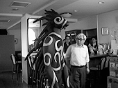

97.7.2（水） 名古屋 雨
静岡9時47分発の新幹線にて名古屋へ出発。
整体の先生も一緒。
まず、中日新聞社にて、中日新聞と中日スポーツの取材。中日新聞社では、すでにディダラボッチがロビーで待機しており、いきなり監督とのツーショット写真を撮るところから始まった。やはり、ディダラ改良の成果は大きいらしく、前に比べて簡単に入れるようになっている。この日、ディダラボッチの着ぐるみを着たのは、女性だったそうです。

ディダラボッチの全身像です。ただし、この写真はキャンペーンのものではありません。昼食は、東宝中部支社の偉い人も交えてうなぎを食べる。この席で鈴木プロデューサーは、伴田さんの悪行（?）をばらし、伴田さんはもう笑うしかない、という状態だったらしい。
朝日新聞取材。カメラマンは女性だった。ちなみに中日新聞のカメラマンも女性で、「最近は女性が増えているんですね。」と監督の一言。
中京テレビまで、タクシーで移動。「ニュースプラス1」「きくち教児のおめざめワイド」「奥様ランチ」「電波大将軍」「めざせ相楽天」「インフォメーションスポット」の6番組収録を一気にこなす。
CBCに移動。
休憩の時間ということで、例のごとく、例の場所へ出かける。しかし、全員バツ。特に伴田さんは、福岡以来フィーバーなし。監督曰く「そのうち、公金に手を付けるにちがいない。」
「ミックスパイ下さい」TV生出演。この日は「宮崎駿スペシャル」として30分番組。もののけ一色のすばらしい番組だったそうです。
ホテルで休憩。パチンコへは行ってません。
名宝スカラ座にて舞台挨拶。大きな劇場で、お客さんが1000人入るそうです。「ここでディダラボッチの出番があったかどうか、忘れてしまいました。」とのこと。
夕食は鳥なべ。伴田さんは肉の中で、鳥肉が一番好きで「死ぬほど食べました」ということです。
9時過ぎ、まあ「行きますか」と例の場所へ。監督は2回もフィーバー。鈴木プロデューサー、伴田さんはフィーバーならず。「パチンコの本場で出せて嬉しい」と監督。鈴木プロデューサーに陰りが見えはじめ、伴田さんはにんまり。
その後解散。
| 次のページへ |
| はじめのページに戻る |
| 「もののけ姫」トップページへ戻る |